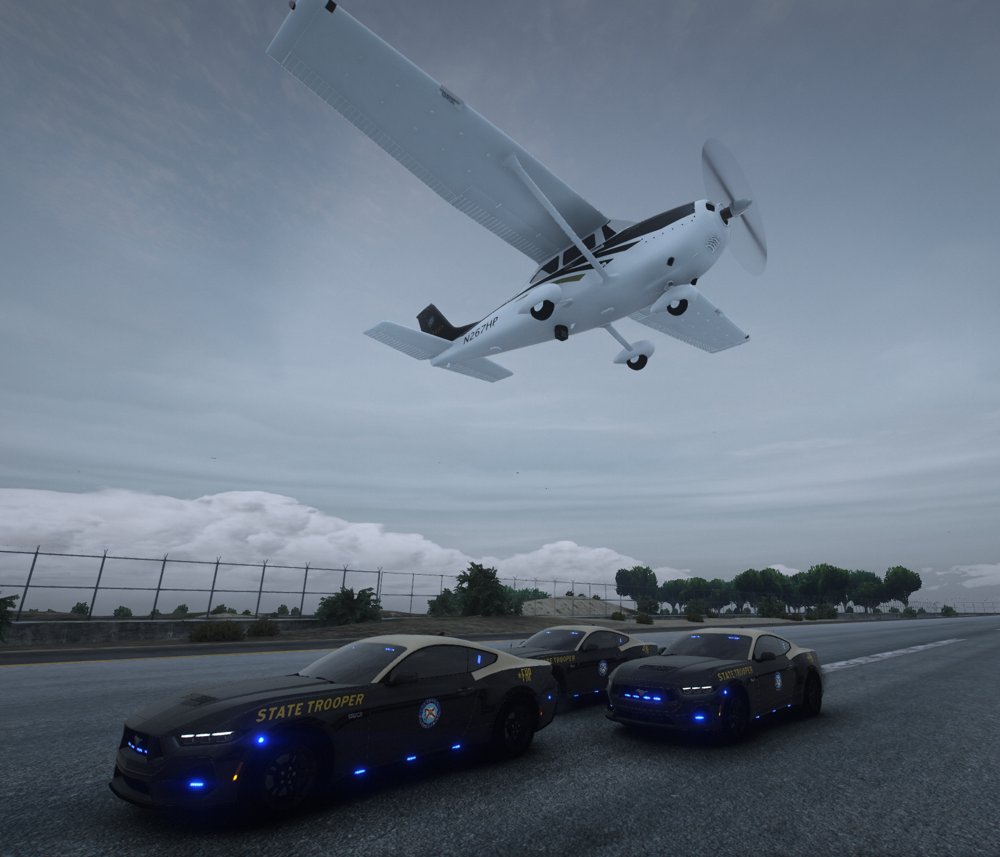
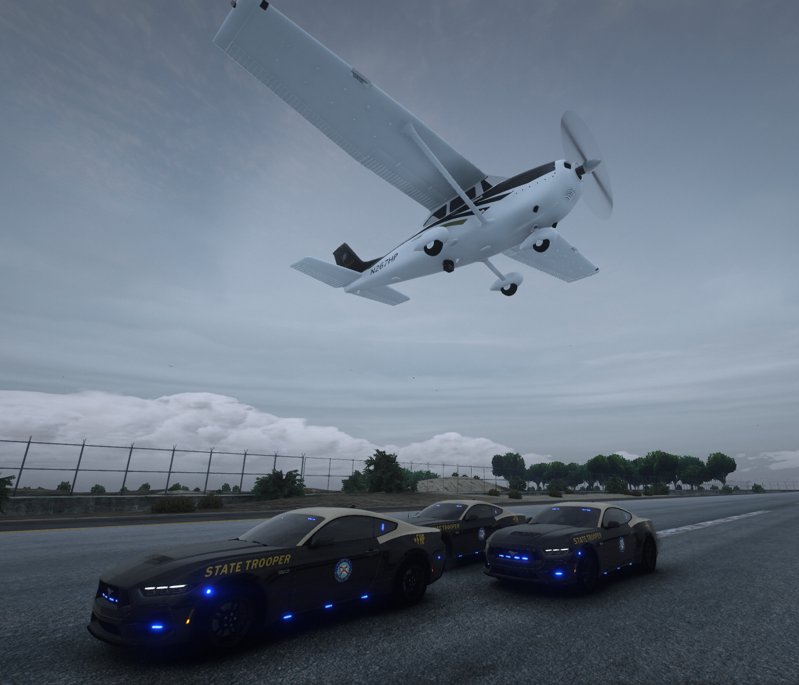

FHP has seven aircraft handling traffic throughout the state. These aircraft are fixed wing airplanes, Cessna 172s and 182s. One airplane is based in each of these two cities— West Palm Beach and Miami. These aircrafts are utilized for traffic safety, recovering stolen vehicles, and other calls of service. The Unmanned Aerial Systems (UAS) provides providing real-time situational awareness, aiding in emergency response, and optimizing traffic and incident management.
 
